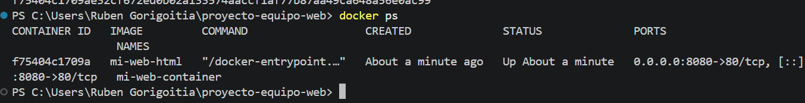
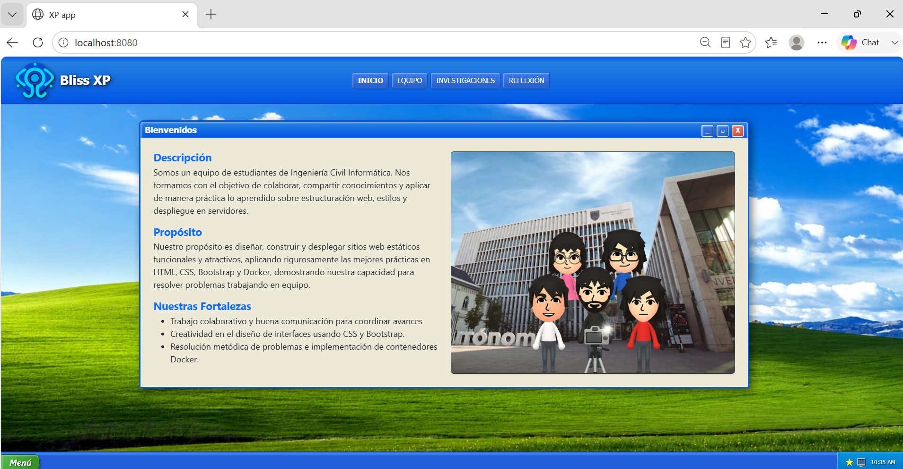

¿Qué es Nginx y cuál es su propósito?
Nginx es un servidor web HTTP de alto rendimiento, proxy inverso y balanceador de carga de código abierto. En nuestro proyecto, actúa como el servidor ligero encargado de recibir las peticiones de los navegadores y servir de forma rápida y eficiente todos los archivos estáticos (documentos HTML, hojas de estilo CSS e imágenes) dentro de un contenedor Docker aislado.
1. Contenido y Explicación del Dockerfile
El archivo Dockerfile contiene las instrucciones paso
a paso para construir la imagen de nuestro sitio web sobre la
distribución ultra ligera Alpine Linux:
FROM nginx:alpine
# Copiar todo el contenido de nuestro proyecto al directorio raíz de Nginx
COPY . /usr/share/nginx/html
| Instrucción | Propósito y Funcionamiento |
|---|---|
FROM nginx:alpine |
Establece la imagen base oficial de Nginx montada sobre Alpine Linux, lo que garantiza un consumo mínimo de recursos y un peso sumamente reducido (menor a 25MB). |
COPY . /usr/share/nginx/html |
Copia todos los archivos locales del repositorio (HTML,
carpetas css/ e img/) dentro del
directorio público predeterminado desde el cual Nginx
despacha el sitio.
|
2. Comandos de Construcción y Despliegue
-
Construcción de la imagen:
docker build -t mi-web-html .
Descarga la imagen base de Nginx y empaqueta nuestro código dentro de una nueva imagen local llamadami-web-html. -
Ejecución y Mapeo de Puertos:
docker run -d -p 8080:80 --name mi-web-container mi-web-html
-d: Ejecuta el contenedor en segundo plano (detached).
-p 8080:80: Redirecciona el puerto8080de la máquina anfitriona (tu PC) hacia el puerto80interno del servidor Nginx en el contenedor.
--name mi-web-container: Asigna un identificador amigable al contenedor activo.
3. Evidencias de Funcionamiento (localhost:8080)
Capturas que certifican el levantamiento del contenedor y el acceso correcto desde el navegador web:
Evidencia 1: Terminal en Ejecución
Salida de docker run o
docker ps confirmando el contenedor activo.

[Inserta aquí la captura de tu terminal ejecutando docker ps / docker run]' " />Evidencia 2: Navegador en localhost:8080
Sitio web navegable servido directamente por el contenedor Nginx.

[Inserta aquí la captura de tu navegador en http://localhost:8080]' " />